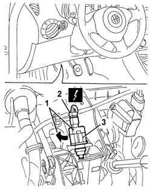
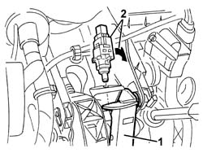

5550D10 BRAKE LIGHT SWITCH - R+R
- Path
- Procedures > 55 ELECTRICAL EQUIPMENT > 5550 WARNING AND MANOEUVRING INDICATORS > 5550D BRAKE AND REVERSING LIGHTS > 5550D10 BRAKE LIGHT SWITCH - R+R
- Kind
- repair procedure (removal / refitting; the operation number is the code)
- Applies to
- all engines; all production periods
- Interactive page
- https://sloeber94.github.io/elrnDB-aGt/en/#/125001703
Applies to: all engines; all production periods
 Removing
Removing
 Refitting
Refitting- Open the bonnet.
- Disconnect the negative battery terminal.
- Working underneath the left side of the dashboard trim, rotate the switch in a clockwise direction by about 90° and move it.
- Disconnect the electrical connection.
- Keep the switch

Applies to: all engines; all production periods
Refitting
Removing- Keep the brake pedal pressed and fit the switch in the position illustrated.
- Rotate the switch in an anti-clockwise direction through around 90° until it is properly fitted in place.
- Release the brake pedal.

Applies to: all engines; all production periods
- Connect the electrical connection for the brake pedal.
- Connect the negative battery terminal.
- Close the bonnet.
- Check that the brake lights are working.